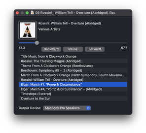

View on GitHub
View on GitHub SFBAudioEngine Reference
SFBAudioEngine Reference
SFBAudioEngine
SFBAudioEngine is a toolbox of powerful audio functionality for both macOS and iOS. SFBAudioEngine supports:
- Audio decoding
- Audio playback
- Audio encoding
- Audio format conversion
- Audio properties information and metadata editing
SFBAudioEngine is usable from both Swift and Objective-C.
Format Support
SFBAudioEngine supports most audio formats. In addition to all formats supported by Core Audio SFBAudioEngine supports:
- Ogg Speex
- Ogg Vorbis
- Monkey’s Audio
- Musepack
- Shorten
- True Audio
- WavPack
- All formats supported by libsndfile
- DSD to PCM conversion for DSD64
- DSD decoding for DSF and DSDIFF with support for DSD over PCM (DoP)
FLAC, Ogg Opus, and MP3 are natively supported by Core Audio, however SFBAudioEngine provides its own encoders and decoders for these formats.
Quick Start
Playing an audio file is as simple as:
import SFBAudioEngine
let player = AudioPlayer()
let url = URL(fileURLWithPath: "example.flac")
try? player.play(url)
Reading audio properties and metadata is similarly trivial:
if let audioFile = try? AudioFile(readingPropertiesAndMetadataFrom: url) {
let sampleRate = audioFile.properties.sampleRate
let title = audioFile.metadata.title
}
Want to convert a WAVE file to FLAC?
let inputURL = URL(fileURLWithPath: "music.wav")
let outputURL = URL(fileURLWithPath: "music.flac")
try AudioConverter.convert(inputURL, to: outputURL)
The output file’s format is inferred from the file extension.
More complex conversions are supported including writing to Data instead of files:
let output = OutputSource.makeForData()
let encoder = try AudioEncoder(outputSource: output, encoderName: .coreAudio)
encoder.settings = [
.coreAudioFileTypeID: kAudioFileM4AType,
.coreAudioFormatID: kAudioFormatMPEG4AAC,
.coreAudioAudioConverterPropertySettings: [kAudioConverterCodecQuality: kAudioConverterQuality_High]
]
try AudioConverter.convert(inputURL, using: encoder)
// Encoder output is in `output.data`
Requirements
macOS 10.15+ or iOS 14.0+
Building SFBAudioEngine
git clone git@github.com:sbooth/SFBAudioEngine.git --recurse-submodulescd SFBAudioEnginemake -C XCFrameworks install
The project file contains targets for macOS and iOS frameworks. The frameworks are signed to run locally by default. If you are using the hardened runtime you will need to select a team for signing.
The included Makefile may also be used to create the build products:
| Target | make Command |
|---|---|
| macOS Framework | make archive/macOS.xcarchive |
| macOS Catalyst Framework | make archive/macOS-Catalyst.xcarchive |
| iOS Framework | make archive/iOS.xcarchive |
| iOS Simulator Framework | make archive/iOS-Simulator.xcarchive |
| XCFramework | make |
SimplePlayer
Open SimplePlayer, build, and play something!
Decoding
Audio decoders in SFBAudioEngine are broadly divided into two categories, those producing PCM output and those producing DSD output. Audio decoders read data from an SFBInputSource which may refer to a file, buffer, or network source.
All audio decoders in SFBAudioEngine implement the SFBAudioDecoding protocol. PCM-producing decoders additionally implement SFBPCMDecoding while DSD decoders implement SFBDSDDecoding.
Three special decoder subclasses that wrap an underlying audio decoder instance are also provided: SFBLoopableRegionDecoder, SFBDoPDecoder, and SFBDSDPCMDecoder. For seekable inputs, SFBLoopableRegionDecoder allows arbitrary looping and repeating of a specified PCM decoder segment. SFBDoPDecoder and SFBDSDPCMDecoder wrap a DSD decoder providing DSD over PCM (DoP) and PCM output respectively.
Playback
SFBAudioPlayerNode
SFBAudioPlayerNode is a subclass of AVAudioSourceNode that provides rich playback functionality within an AVAudioEngine processing graph. SFBAudioPlayerNode supports gapless playback and comprehensive status notifications through delegate callbacks.
SFBAudioPlayer
SFBAudioPlayer wraps an AVAudioEngine processing graph driven by SFBAudioPlayerNode. SFBAudioPlayer provides complete player functionality with no required configuration but also allows customization of the underlying processing graph as well as rich status notifications through delegate callbacks.
Encoding
Audio encoders in SFBAudioEngine process input data and convert it to their output format. Audio encoders write data to an SFBOutputSource which may refer to a file, buffer, or memory source.
All audio encoders in SFBAudioEngine implement the SFBAudioEncoding protocol. PCM-consuming encoders additionally implement SFBPCMEncoding. Currently there are no encoders consuming DSD in SFBAudioEngine.
Encoders don’t support arbitrary input formats. The processing format used by an encoder is derived from a desired format combined with the encoder’s settings.
Conversion
SFBAudioConverter supports high level conversion operations. An audio converter pulls input data from a decoder, converts the data to the encoder’s processing format, and pushes the data to the encoder. At the completion of conversion metadata is written, if supported.
Properties and Metadata
Audio properties and metadata are accessed via instances of SFBAudioFile. Audio properties are read-only while metadata is writable for most formats. Audio metadata may be obtained from an instance of SFBAudioFile or instantiated directly.
Sample Audio Players
Two versions of SimplePlayer, one for macOS and one for iOS, are provided illustrate the usage of SFBAudioEngine.
macOS

SimplePlayer for macOS is written in Swift using AppKit and supports gapless sequential playback of items from a playlist. The essential functionality is contained in one file, PlayerWindowController.swift.
iOS

SimplePlayer for iOS is written in Swift using SwiftUI and supports playback of a single item selected from a list.
License
SFBAudioEngine is released under the MIT License.
The open-source projects providing support for the various audio formats are subject to their own licenses that are compatible with the MIT license when used with SFBAudioEngine’s default build configuration. For information on the specific licenses for each project see the README in the project’s folder in XCFrameworks.
LGPL Notes
In order to maintain compatibility with the LGPL used by libsndfile, mpg123, libtta-cpp, lame, and the Musepack encoder dynamic linking is required.